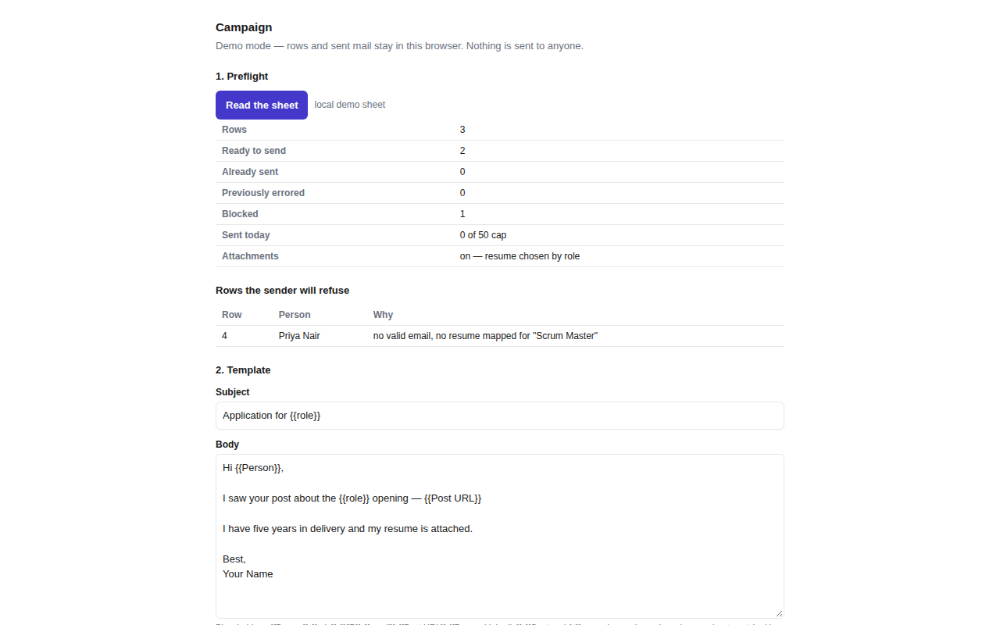
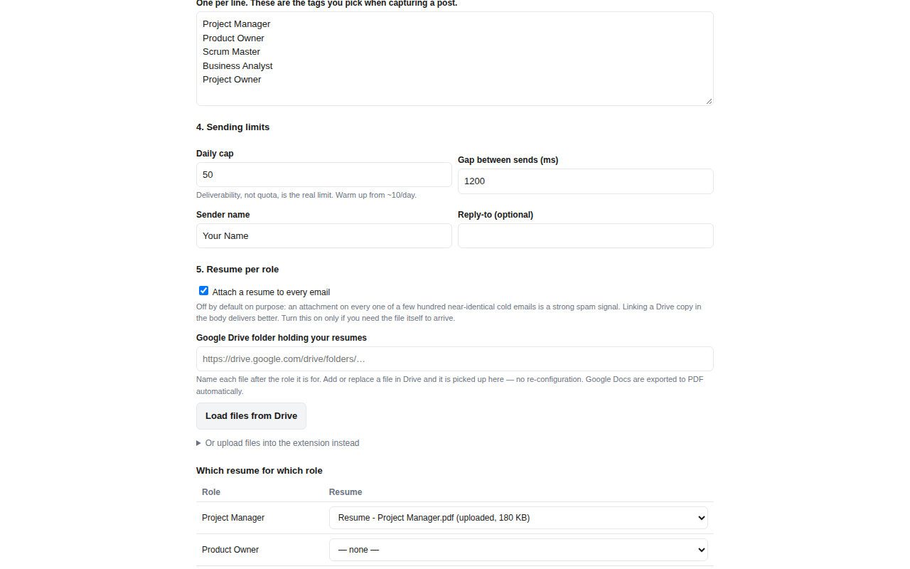

Stop copying LinkedIn posts into a spreadsheet by hand
Sheet Mailer captures a hiring post into a Google Sheet you own — the person, the role, the post text, the contact address — then sends personalised outreach from your own Gmail, one template, throttled and capped.
Free. No account with us, because there is no us to have an account with — see where your data goes.
The two halves
Capture
On a hiring post, click the toolbar icon — or the optional + Sheet button in
the feed. You get an editable form: who posted it, the contact address found in the text,
the post body, and a role tag you pick. Confirm, and it becomes a row.
Nothing is guessed silently. Every field is editable before it is saved, and a post with no address is stored flagged rather than quietly dropped.
Send
Write one template with {{Person}}, {{role}},
{{JD}} and {{Post URL}} placeholders. Preview it against a real
row. Dry run the whole sheet. Then send, with a gap between messages and a daily cap.
Status is written back to the sheet as it goes, so an interrupted run resumes without sending anything twice.
What it looks like



Where your data goes
There is no server. Sheet Mailer talks to Google's APIs directly from your browser, as you. Your sheet, your mail, your captured rows and your sign-in token never pass through any machine belonging to the developer, because there is no such machine.
No analytics, no telemetry, no crash reporting, no third-party services. Nothing is sold or shared, and nothing is used to train anything. The privacy policy says this at length, including exactly which Google endpoints are contacted and why.
It reads only the post you are looking at. The extension does not browse, crawl, scroll, paginate, or call LinkedIn's APIs, and it never reads LinkedIn in the background. A default install has no access to linkedin.com at all — the toolbar capture works on the tab you invoke it on, and the in-feed button is off until you switch it on and grant access.
Honest limits
- Deliverability is the real constraint, not quota. A few hundred near-identical cold emails from a consumer Gmail is exactly the pattern spam classifiers look for. The daily cap defaults to 50 and attachments are off by default for that reason. Warm up slowly.
- LinkedIn changes its markup. When it does, a field may come back empty. The form is always editable and shows where each value came from, so the failure is visible rather than silent — but it is a real maintenance cost of the approach.
- You are responsible for what you send. Bulk outreach is regulated differently in different places, and LinkedIn's own terms restrict automated data extraction. The terms go into this properly.
Getting started
- Install the extension. The settings page opens by itself.
- Want to try it first? Tick Demo mode — the whole flow runs locally with no Google account and no mail leaving the browser.
- Otherwise sign in with Google and paste the link to your sheet. Missing columns are created for you; your own columns are left alone.
- Edit the role tags to the ones you actually apply for, and you are ready to capture.